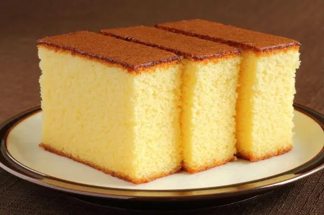

Plane Sponge
easy recipe for a simple, moist and delicious vanilla sponge cake.

Ingredients
125 g Maida (Plain Flour)
125 g Butter
125 g Powdered Sugar
2 Eggs
1/2 tsp Baking Powder
The secret to a soft, spongy cake is in the beating of eggs and butter mixture. The rise depends heavily on the
amount of air incorporated during the whisking stage. Once the butter, eggs and sugar mixture is airy and light,
the flour is folded into this carefully using a spatula
Serve it as a tea cake by itself or use as a base for any other cakes that you want to make during a special
occasion like birthday parties or festivals like Christmas. An easy recipe for a simple, moist and delicious
vanilla sponge cake.